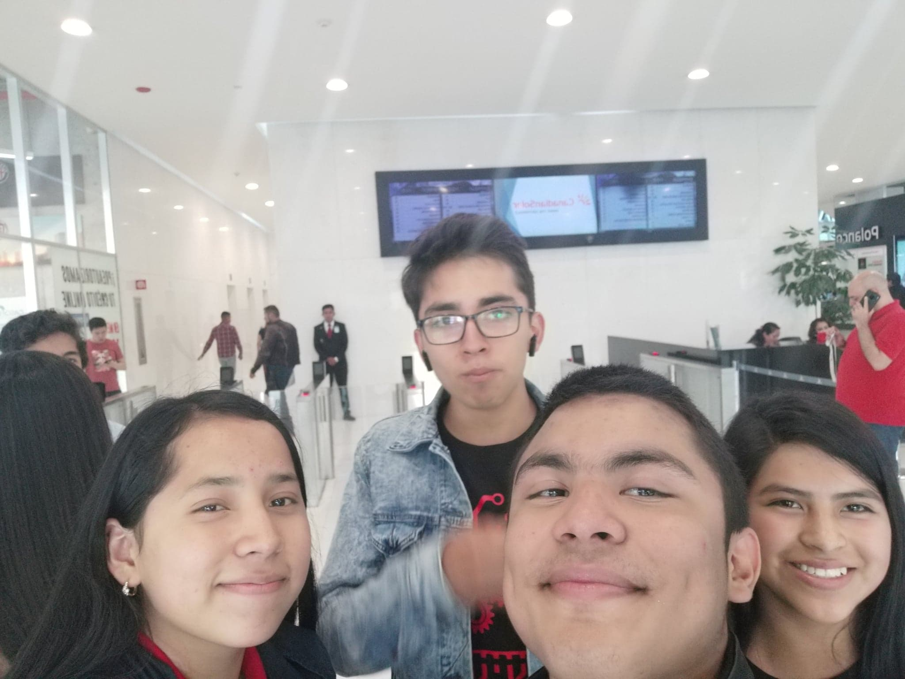

Reunión en Chemours/h1>
Duración: 2 horas
Lo que paso
El martes 15 de octubre, parte de Hardlus y Naubots, todos venimos de parte de Hardlus en
la zona cercana al Soumaya, en Polanco. Los que fuimos fueron Ernesto y Dheni del programa
internacional de 3° semestre, Carolina, Kenia, otros compañeros del equipo y el profesor
Victor Antonio. Después de arreglar unos problemas de acceso por edad y esperar algunos
minutos, tuvimos acceso a las oficinas, donde tuvimos el primer meeting con algunos de los
ejecutivos de la empresa, donde hablamos lo que era el equipo y las competencias, después
nos hablaron de que era Chemours y finalmente de los planes futuros sobre el patrocinio,
después nos retiramos de nuevo al campus.
Objetivos Personales y CAS
Personal: Aprender sobre patrocinios y formas de apoyar al equipo
CAS: Emprender nuevos desafios, trabajar en colaboración con otras
personas
La manera en que cumplí estos objetivos, fue colaborar con mis compañeros para ponernos en
acuerdo del orden, como íbamos a llegar al lugar, como nos íbamos a dividir, entre otras
cosas.
También colaboramos con Chemours para ponernos de acuerdo sobre los patrocinios y acciones
finales. La forma que cumplimos el objetivo de emprender nuevos desafíos,
fue la decisión en conjunto que tomamos sobre tomar el riesgo de buscar un nuevo patrocinio
para los 3 equipos y los desafíos que tiene esto y aun asi tomamos el riesgo.
Mis aprendizajes
Aprendí que para hacer el equipo mas grande e incluso "poderoso",
es necesario tomar riesgos y planificar la forma en que nos enfrentaremos
contra estos retos.
